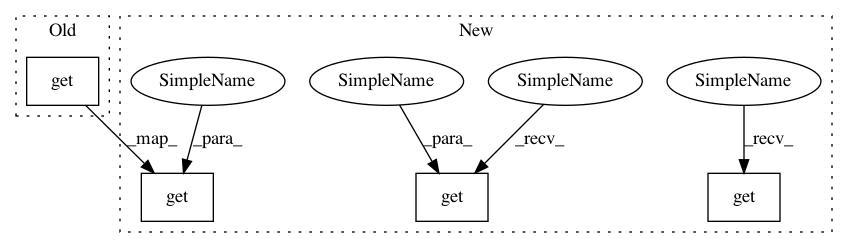

fdd85e3af411d61040e5693d4de6061725a52b15,python/ray/serve/benchmarks/handle.py,,run_test,#,59
Before Change
// real test
start = time.time()
ray.get([handle.remote() for _ in range(num_queries)])
qps = num_queries / (time.time() - start)
logger.info("{} forwarders and {} worker replicas: {} requests/s".format(
num_forwarders, num_replicas, int(qps)))
After Change
if sync:
ray.get(handle.remote())
else:
ray.get(await handle.remote_async())
// real test
start = time.time()
if sync:
ray.get([handle.remote() for _ in range(num_queries)])
else:
ray.get([(await handle.remote_async()) for _ in range(num_queries)])
qps = num_queries / (time.time() - start)
print(
f"Sync: {sync}, {num_forwarders} forwarders and {num_replicas} worker "
In pattern: SUPERPATTERN
Frequency: 5
Non-data size: 4
Instances
Project Name: ray-project/ray
Commit Name: fdd85e3af411d61040e5693d4de6061725a52b15
Time: 2020-12-15
Author: simon.mo@hey.com
File Name: python/ray/serve/benchmarks/handle.py
Class Name:
Method Name: run_test
Project Name: ray-project/ray
Commit Name: fdd85e3af411d61040e5693d4de6061725a52b15
Time: 2020-12-15
Author: simon.mo@hey.com
File Name: python/ray/serve/benchmarks/handle.py
Class Name:
Method Name: run_test
Project Name: ray-project/ray
Commit Name: ada58abcd92cd7b38cf1c0ee1525d52e388558f9
Time: 2020-10-02
Author: swang@cs.berkeley.edu
File Name: python/ray/tests/test_object_spilling.py
Class Name:
Method Name: test_spill_remote_object
Project Name: ray-project/ray
Commit Name: 52c94b7ee970da69721ca64f291e38556310482e
Time: 2021-02-02
Author: sven@anyscale.io
File Name: rllib/models/tf/fcnet.py
Class Name: FullyConnectedNetwork
Method Name: __init__
Project Name: ray-project/ray
Commit Name: dd63178e91dbe77b79be8d38bdf67501ceee1d7c
Time: 2020-04-10
Author: rliaw@berkeley.edu
File Name: python/ray/util/sgd/torch/torch_trainer.py
Class Name: TorchTrainer
Method Name: _start_workers
Project Name: ray-project/ray
Commit Name: 52c94b7ee970da69721ca64f291e38556310482e
Time: 2021-02-02
Author: sven@anyscale.io
File Name: rllib/models/torch/fcnet.py
Class Name: FullyConnectedNetwork
Method Name: __init__